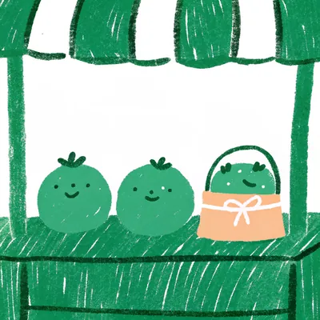

へんな物ばかりの商店街。1人が1つずつ、自分のお店を持つ（2〜12人）。番の人だけがお客さんになって、ほしい物をさがす。名前を思い出せないので、ヒント2つで聞く。ちがう物が出てくることもある。
リンクから開いたので、ルームコードは入っているよ。名前を入れて「参加する」を押してね。
画面共有でみんなに見せるための画面です。ルームには入らず、見るだけです。
参加のしかた
「ルームに参加する」で、名前とルームコードを入れてね
見るだけの人は、トップの「みんなにみせる画面をひらく」から見られるよ。
あそぶ時間
人数が多いときは、10分か15分がおすすめ。0になったら、おわりの画面に進む。
お客さんがヒントを決める時間
番が来てから、ヒントを送るまでの時間。時間が来たら、えらんだヒントで送る（1つもえらんでいなければ、ほしい物に合うヒントを1つ）。
お店の人が決める時間
お客さんがヒントを送ってから、品物を出すか決めるまでの時間。時間が来たら、まだ決めていないお店は出さなかったことになる。
ホストがはじめるのを待っているよ
あなたのポイント 0
あなたのお店
遊んでくれてありがとう。